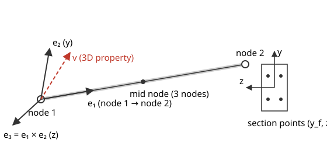

Beam Element
Theory
Euler-Bernoulli beam (frame) elements, geometrically linear, in two (nodal dofs \(u_x, u_y, \theta_z\)) or
three (\(u_x, u_y, u_z, \theta_x, \theta_y, \theta_z\)) spatial dimensions, with 2 or 3 nodes (node order
end, end, mid as for Bar3; the mid node lies at the middle of the straight beam). The node fields are
displacement and rotation (ordered node by node).
Name |
dim |
nodes |
interpolation (transverse / axial, twist) |
integration along the axis |
|---|---|---|---|---|
|
2 |
2 |
cubic Hermite / linear |
3 Gauss points |
|
2 |
3 |
quintic Hermite / quadratic |
4 Gauss points |
|
3 |
2 |
cubic Hermite / linear |
3 Gauss points |
|
3 |
3 |
quintic Hermite / quadratic |
4 Gauss points |
|
2 |
2 |
co-rotational |
3 Gauss points |
|
3 |
2 |
co-rotational |
3 Gauss points |
The names follow Marmot’s scheme B<dimension>D<nodes>, as T<dimension>D<nodes> of the trusses; the suffix
CR marks the co-rotational variants. In Abaqus, B2D2 and B3D2 correspond to the cubic Euler-Bernoulli
beams B23 and B33 (B<dimension><order>); Abaqus has no 3-node Euler-Bernoulli beam (B22, B32
are Timoshenko beams). Every node carries the displacement and the rotation; with the rotations as the slopes of
the transverse displacement (Hermite interpolation), 2 nodes give 4 values per transverse direction (cubic) and
3 nodes give 6 (quintic), at no additional degrees of freedom. In the local frame \((\mathbf{e}_1, \mathbf{e}_2, \mathbf{e}_3)\) (\(\mathbf{e}_1\)
from node 1 to node 2, section coordinates \(y, z\)), the transverse displacements \(v, w\) are Hermite
polynomials of the nodal values and rotations \(\theta_z = v'\), \(\theta_y = -w'\) (no shear deformation,
no shear locking).
The Hermite functions come from the conditions at the nodes: with the parameter \(s = x/L \in [0, 1]\) (nodes at \(s = 0, 1\) and, for 3 nodes, \(1/2\)), the monomials \(\mathbf{m}(s) = [1, s, s^2, \dots]\) and the matrix \(\mathbf{M}\) of their values and slopes at the nodes, \(\mathbf{H}(s) = \mathbf{m}(s)^\mathsf{T} \mathbf{M}^{-1}\). For 2 nodes these are the textbook cubic functions (e.g., Hughes, The Finite Element Method, sec. 1.16), with \(v(s) = H_1 v_1 + H_2 \theta_1 + H_3 v_2 + H_4 \theta_2\):
The integration along the axis uses 3 Gauss points for 2 nodes (exact to degree 5) and 4 for 3 nodes (degree 7). The curvature is linear (2 nodes) or cubic (3 nodes), so the elastic stiffness is a polynomial of degree 2 or 6, and the consistent line load one of degree 3 or 5: both are integrated exactly. For 2 nodes, 2 points would suffice for elastic beams; the third, at the middle, gives a plastic zone one more section to form in.
For a linear elastic material, the 2-node element reproduces the exact nodal values of a beam loaded at its nodes, the 3-node element also the exact deflection under a uniform line load. The generalized strains are
Section (BeamFiberSection). The element knows no section shapes: the section is given by its integration
points \((y_f, z_f, A_f)\) (2D: \((y_f, A_f)\)), measured from the beam axis, so any shape can be used
(the framework generates the points, e.g., EdelweissFE’s beam section: rectangles, circles, tubes, I-profiles,
polygons with holes, explicit point lists, with Gauss, Lobatto or Simpson rules). Every point has its own material
instance, created by name through the hypoelastic material factory, and its own state, so any hypoelastic material
of Marmot can be used. A point has the strains
and is evaluated in uniaxial stress (2D, computeUniaxialStress) or in the beam stress state
\(\sigma_{22} = \sigma_{33} = \sigma_{23} = 0\) (3D,
BeamFiberSection::computeFiberStress3D with Marmot::ContinuumMechanics::ReducedStress::computeReducedStress,
prescribed \(p = \{0, 3, 4\}\), stress-free \(f = \{1, 2, 5\}\): Newton iteration on the free strains with
state reset, condensed 3x3 tangent). The section forces \((N, M_y, M_z, T)\)
are the work conjugates of \((\varepsilon_0, \kappa_y, \kappa_z, \chi)\). Unsymmetric sections and
non-principal axes (\(\int yz\,\mathrm{d}A \neq 0\)) and sections off the axis couple naturally. Torsion is
Saint-Venant torsion about the centroid \((y_c, z_c)\) of the points without warping; the factor
\(\alpha_T = \sqrt{J / \sum_f ((y_f-y_c)^2 + (z_f-z_c)^2) A_f}\) gives the torsional stiffness \(GJ\) for the given
torsion constant \(J\) (\(\alpha_T = 1\) for circles and tubes); the shear center offset is neglected. The torque is
therefore exact for any section, but the fiber shear stresses \(\sigma_{12}, \sigma_{13}\) are Saint-Venant
stresses only for circles and tubes: elsewhere they grow linearly with the distance from the centroid. For a square
of side \(a\), the fibers at the middle of a side carry \(0.46\,G a \chi\) instead of the Saint-Venant
\(0.68\,G a \chi\), and the corners \(0.65\,G a \chi\) instead of \(0\). For plastic torsion of
non-circular sections, the fiber shear stresses are an approximation.
Element properties:


The local frame: \(\mathbf{e}_1\) from node 1 to node 2, \(\mathbf{e}_2\) the part of the orientation vector \(\mathbf{v}\) normal to the axis (3D; in 2D \(\mathbf{e}_2\) is \(\mathbf{e}_1\) turned by +90 degrees), \(\mathbf{e}_3 = \mathbf{e}_1 \times \mathbf{e}_2\). The section (right) is seen from node 2, with \(\mathbf{e}_1\) towards the viewer: the section coordinates \(y, z\) are measured along \(\mathbf{e}_2, \mathbf{e}_3\).
2D: \([n, y_1, A_1, \dots, y_n, A_n]\);
3D: \([v_x, v_y, v_z, J, n, y_1, z_1, A_1, \dots, y_n, z_n, A_n]\) with the orientation vector \(\mathbf{v}\), whose part normal to the axis is \(\mathbf{e}_2\) (\(\mathbf{e}_3 = \mathbf{e}_1 \times \mathbf{e}_2\)).
A body force \(\mathbf{b}\) (per volume) acts at the section points: it gives the consistent nodal forces and moments of the line load \(\mathbf{q} = \mathbf{b} A\) and, for a section whose centroid \(\mathbf{r}_c = (0, y_c, z_c)\) is off the axis, of the line moment \(\mathbf{m} = \mathbf{r}_c \times \mathbf{q}\) (e.g., the self-weight of an eccentric section, or an axial load on it).
Quadrature point states: normal force, bending moment (2D) / bending moments and torque (3D),
axial strain, curvature (2D) / curvatures and twist rate (3D), section forces and
section strains (all components), elastic energy, dissipation; the state of a section point \(k\) as
fiber k stress (\(\sigma_{11}, \sigma_{12}, \sigma_{13}\)) or fiber k <material state>.
Verification (TestBeamElement): cantilevers (tip force, moment, axial force, line load for 3 nodes, biaxial
bending, torsion) exact; an L-profile (non-principal axes) against the analytical solution with
\(I_y, I_z, I_{yz}\); rigid body motions; numerical tangents in von Mises plastic states; plastic moment
\(f_y \sum |y_f| A_f\) and axial yield force; the limit load of von Mises cantilevers converges to
\(f_y Z / L\) (rectangle, circle, T-section with its plastic neutral axis).
Limitations: geometrically linear (small rotations; a finite rigid rotation strains the element), no shear deformation, one material per element (a composite section = several elements on the same nodes), no distributed surface loads, no inertia. As any displacement-based fiber beam, a plastic hinge forms at the quadrature point nearest to the peak moment: the limit load converges linearly with the element size. A section whose centroid is off the axis couples the axial strain and the curvature (\(\varepsilon_0 = -y_c \kappa\) in pure bending): the 3-node beams represent the linear axial strain of a cantilever under a tip load exactly, the 2-node beams (axial strain constant per element) converge with \(h^2\).
How to use
The element uses no units of its own: give coordinates, section coordinates and areas, material parameters and loads
in one consistent system, e.g., N, mm, MPa (then forces are in N, moments in N mm). A 2D cantilever B2D2 of
length \(L\) with a rectangle \(b \times h\):
properties \([n, y_1, A_1, \dots]\): \(n\) points over the height, e.g., Gauss points of the height \(h\) with areas \(b\,h\,w_i/2\), so that \(\sum A_f = bh\) and \(\sum y_f^2 A_f = bh^3/12\);
clamp the root: Dirichlet conditions on both node fields,
displacementandrotation;a tip force \(P\) gives the tip deflection \(P L^3 / (3 E I)\) with one element (exact, see the verification below); the
bending momentat the quadrature points is \(P (L - x)\);fiber results:
fiber 0 stressis \((\sigma_{11}, \sigma_{12}, \sigma_{13})\) of section point 0.
In EdelweissFE the section points are generated by the beam section (rectangles, circles, tubes, I-profiles,
polygons, explicit lists; see the EdelweissFE documentation of the sections), which also writes these properties.
Co-rotational variants
B2D2CR and B3D2CR take the properties, the section and the quadrature point states of B2D2 /
B3D2 and allow arbitrary rigid rotations and large displacements with small local strains. The rigid motion is
split off by a co-rotated frame along the current chord (2D: Crisfield; 3D: Battini and Pacoste, with the mean of
the nodal second axes); in that frame the geometrically linear kinematics of B2D2 / B3D2 give the section
strains, fed incrementally to BeamFiberSection. The tangent is consistent (material + geometric stiffness; in 3D
the Jacobian of the local map and the geometric stiffness are exact by forward automatic differentiation). In 3D the
nodal rotation dofs are total rotation vectors (additive parametrization, \(|\boldsymbol{\Psi}| < 2\pi\)).
Therefore a nodal moment load on the rotation field of B3D2CR is a physical moment only for small rotations:
it acts on the rotation-vector dofs, i.e., it is work conjugate to \(\delta\boldsymbol{\Psi}\), not to the
spatial spin. Apply finite-rotation moments as force couples. (In 2D the rotation is additive, and nodal moments are
physical moments.)
Body forces are lumped to the nodes (\(\mathbf{b} A L / 2\) each, on the axis: the moment of an eccentric section is
neglected). Axial strain measure: engineering strain of the chord.
Verification (TestCorotationalBeamElement, TestCorotationalBeamElement3D): zero forces under rigid
rotations (also several turns in 2D), objectivity of nodal and section forces, numerical tangents (elastic and von
Mises plastic, large rotations), the tangent at the reference state equals the linear element, roll-up of a
cantilever into a full circle by an end moment, elastica under a tip force against the elliptic-integral solution,
the 45 degree bend (Bathe and Bolourchi) in 3D, plastic bending under large rigid rotations.
Implementation
-
template<int nDim, int nNodes>
class BeamElement : public Marmot::Discretizations::Elements::Element Euler-Bernoulli beam (frame) element in two or three spatial dimensions with 2 or 3 nodes, geometrically linear, with a fiber section (BeamFiberSection) for any hypoelastic material of Marmot.
Node fields: displacement and rotation (2D: one rotation about the out-of-plane axis; 3D: the rotation vector). The dofs are ordered node by node, displacement before rotation.
Integration along the axis: 3 Gauss points (2 nodes, exact to degree 5), 4 Gauss points (3 nodes, degree 7). The curvature is linear (2 nodes) or cubic (3 nodes) along the axis, so the elastic stiffness is a polynomial of degree 2 or 6 and the consistent line load (Hermite times constant) one of degree 3 or 5: both are integrated exactly. For 2 nodes, 2 points would suffice for elastic beams; the third one, at the middle, gives a plastic zone one more section to form in.
- Kinematics
In the local frame \(( \boldsymbol{e}_1, \boldsymbol{e}_2, \boldsymbol{e}_3 )\) ( \(\boldsymbol{e}_1\) along the axis from node 1 to node 2, section coordinates \(y, z\)) the axial displacement \(u\) and the twist \(\varphi\) are interpolated by the Lagrange polynomials of the nodes (linear or quadratic), the transverse displacements \(v, w\) by the Hermite polynomials of the nodal values and the nodal rotations \(\theta_z = v'\) and \(\theta_y = - w'\) (cubic for 2 nodes, quintic for 3 nodes; Euler-Bernoulli: no shear deformation, no shear locking). The generalized strains are \(\varepsilon_0 = u'\), \(\kappa_y = -w''\), \(\kappa_z = v''\) and \(\chi = \varphi'\) (2D: \(\varepsilon_0\) and \(\kappa = \kappa_z\)). For a linear elastic material, the 2-node element reproduces the exact nodal values of a beam loaded at its nodes, the 3-node element also the exact deflection of a beam under a uniform line load (quartic).
Geometrically linear: rotations must remain small. The section (BeamFiberSection) is independent of the kinematics, so a co-rotational variant only has to provide the generalized strains of its co-rotated frame and the corresponding (geometric) tangent.
Element properties: the section is given by its integration points (any shape; the element knows no shapes):
2D: \([ n, y_1, A_1, \dots, y_n, A_n ]\), \(y\) in the plane, normal to the axis ( \(\boldsymbol{e}_2 = \boldsymbol{e}_z \times \boldsymbol{e}_1\)).
3D: \([ v_x, v_y, v_z, J, n, y_1, z_1, A_1, \dots, y_n, z_n, A_n ]\) with the orientation vector \(\boldsymbol{v}\), whose part normal to the axis is the local \(y\) axis \(\boldsymbol{e}_2\) ( \(\boldsymbol{e}_3 = \boldsymbol{e}_1 \times \boldsymbol{e}_2\)), and the torsion constant \(J\).
- Section and material
Every integration point along the axis has its own BeamFiberSection; every fiber has its own material instance (created by name through the hypoelastic material factory from the Marmot::Discretizations::MaterialSection) and state. 2D fibers are in uniaxial stress (Marmot::Materials::MaterialHypoElastic::computeUniaxialStress), 3D fibers additionally carry the torsional shear strains, in the beam stress state \(\sigma_{22} = \sigma_{33} = \sigma_{23} = 0\) (BeamFiberSection::computeFiberStress3D()). The torsional shear strains are scaled so that the section has the torsional stiffness \(GJ\) of the given torsion constant: the torque is right for any section, but the fiber shear stresses are Saint-Venant stresses only for circles and tubes (for a square of side \(a\): \(0.46\,G a \chi\) at the middle of a side instead of \(0.68\,G a \chi\), \(0.65\,G a \chi\) at the corners instead of 0).
The section coordinates are measured from the beam axis (the line through the nodes): a section whose centroid is off the axis is an eccentric beam. The materials see the characteristic length \(L/n_\mathrm{qp}\) ( \(L/3\) for 2 nodes, \(L/4\) for 3 nodes), the length one quadrature point represents.
Quadrature point states: 2D: normal force, bending moment, axial strain, curvature; 3D: normal force, bending moments ( \(M_y, M_z\)), torque, axial strain, curvatures ( \(\kappa_y, \kappa_z\)), twist rate; both: section forces and section strains (all components), elastic energy, dissipation (integrated over the quadrature point’s volume). The state of fiber \(k\) is accessible as “fiber k stress” ( \(\sigma_{11}, \sigma_{12}, \sigma_{13}\)) or “fiber k <material state name>”.
Not implemented: distributed (surface) loads, inertia.
- Template Parameters:
nDim – number of spatial dimensions: 2 (nodal dofs \(u_x, u_y, \theta_z\)) or 3 (nodal dofs \(u_x, u_y, u_z, \theta_x, \theta_y, \theta_z\))
nNodes – 2 (linear) or 3 (quadratic; node order end, end, mid as Bar3; the mid node must lie at the middle of the straight beam)
Public Types
-
using Section = BeamFiberSection<nDim>
-
using RhsSized = Eigen::Matrix<double, sizeLoadVector, 1>
-
using KSized = Eigen::Matrix<double, sizeLoadVector, sizeLoadVector>
-
using BSized = Eigen::Matrix<double, nGeneralized, sizeLoadVector>
-
using InterpSize = Eigen::Matrix<double, nDim, sizeLoadVector>
-
using RotationInterpSize = Eigen::Matrix<double, nRotations, sizeLoadVector>
local rotations: theta_z (2D); theta_x = twist, theta_y, theta_z (3D)
Public Functions
-
inline explicit BeamElement(int elementID)
-
inline Eigen::Matrix<double, 1, nHermite> hermite(double s, int derivative) const
The Hermite polynomials or their derivative w.r.t. s at s, ordered as the columns of hermiteCoefficients.
\(\mathbf{H}(s) = \mathbf{m}(s)^\mathsf{T} \mathbf{M}^{-1}\) with the monomials \(\mathbf{m}(s) = [1, s, s^2, \dots]\) and the matrix \(\mathbf{M}\) of their values and slopes at the nodes. For 2 nodes these are the cubic functions (value at node 1, slope at node 1, value at node 2, slope at node 2) \(1 - 3s^2 + 2s^3\), \(s - 2s^2 + s^3\), \(3s^2 - 2s^3\), \(-s^2 + s^3\) (the slope functions are w.r.t. s; the element multiplies them by L for the slope w.r.t. x).
- Parameters:
s – [in] The parameter \(s \in [0, 1]\) along the axis.
derivative – [in] The order d of the derivative: \(d^d s^k / ds^d = k! / (k - d)!\, s^{k-d}\).
- Returns:
The row of the nHermite functions (or their derivatives).
-
inline int nQpStateVars() const
The number of state variables of one quadrature point: the own ones (section forces and strains, energy, dissipation) and those of the section (all fibers)
-
inline virtual int getNumberOfRequiredStateVars() override
The number of state variables; it is known once both the element properties (the fibers) and the material section (the fiber materials) have been assigned, in either order
-
inline virtual std::vector<std::vector<std::string>> getNodeFields() override
Get the nodal field names (e.g. displacement, rotation).
- Returns:
A 2D vector of strings representing the fields per node.
-
inline virtual std::vector<int> getDofIndicesPermutationPattern() override
Get permutation pattern for degrees of freedom.
- Returns:
Vector of indices describing the permutation.
-
inline virtual int getNNodes() override
- Returns:
Number of nodes in the element.
-
inline virtual int getNSpatialDimensions() override
- Returns:
Number of spatial dimensions (2D/3D).
-
inline virtual int getNDofPerElement() override
- Returns:
Number of degrees of freedom per element.
-
inline virtual std::string getElementShape() override
- Returns:
String describing the element shape in Ensight Gold notation (e.g. “quad4”, “hexa8”).
-
inline virtual void assignStateVars(double *stateVars, int nStateVars) override
Assign state variable array to element.
- Parameters:
stateVars – [inout] Pointer to state variable array.
nStateVars – [in] Number of state variables.
-
inline virtual void assignProperty(const ElementProperties &property) override
Assign element property set.
- Parameters:
property – [in] Element property object containing material, geometry, etc.
-
inline virtual void assignProperty(const Marmot::Discretizations::MaterialSection §ion) override
Assign material section property.
- Parameters:
property – [in] Material section definition (e.g. cross-sectional data).
-
inline void createMaterials()
one material per fiber, as soon as both the fibers (element properties) and the material section are known
-
inline void setCharacteristicLength()
the characteristic length L / n_qp of the fiber materials, as soon as both the materials and the length (initializeYourself) are known: the host may assign the material section before or after initializing
-
inline virtual void assignNodeCoordinates(const double *coords) override
Assign nodal coordinates to element.
- Parameters:
coordinates – [in] Pointer to array of nodal coordinates.
-
inline int nSectionPoints() const
The number of section points.
-
inline double area() const
The cross section area (the sum of the areas of the section points).
-
inline InterpSize displacementInterpolation(double xi) const
The local displacements [u, v(, w)] at the parent coordinate xi in terms of the global dofs.
-
inline RotationInterpSize rotationInterpolation(double xi) const
The local rotations at the parent coordinate xi in terms of the global dofs.
2D: \(\theta_z = v'\); 3D: \([\varphi, \theta_y, \theta_z] = [\varphi, -w', v']\) (twist linear or quadratic, slopes from the Hermite functions).
- Parameters:
xi – [in] The parent coordinate in [-1, 1].
- Returns:
The interpolation of the local rotations.
-
inline BSized strainOperator(double xi) const
The generalized strains at the parent coordinate xi in terms of the global dofs.
-
inline virtual void initializeYourself() override
Initialize element state and internal variables.
-
inline virtual void setInitialConditions(StateTypes state, const double*) override
Apply initial conditions to the element.
- Parameters:
state – [in] State type to be set.
values – [in] Array of initial values.
-
inline virtual void computeKernels(const double *QTotal_, const double *dQ_, double *Pe_, double *Ke_, double time, double dT) override
Perform element computations (stiffness, residual, etc.).
- Parameters:
QTotal – [in] Total dof vector.
dQ – [in] Incremental dof vector.
Pint – [out] Internal force vector.
K – [out] Stiffness matrix.
time – [in] Current time.
dT – [in] Time step size.
-
inline virtual void computeKernelsExplicit(const double *QTotal, const double *dQ, double *Pe, double time, double dT) override
Perform element computations for explicit time integration.
Note
Default implementation throws an exception.
- Parameters:
QTotal – [in] Total dof vector.
dQ – [in] Incremental dof vector.
Pint – [out] Internal force vector.
time – [in] Current time.
dT – [in] Time step size.
-
inline virtual void computeDistributedLoad(DistributedLoadTypes, double*, double*, int, const double*, const double*, double, double) override
Compute contribution from distributed surface loads.
- Parameters:
loadType – [in] Type of load.
Pext – [out] External load vector.
K – [out] Stiffness matrix.
elementFace – [in] Index of element face.
load – [in] Applied load values.
QTotal – [in] Total dof vector.
time – [in] Current time.
dT – [in] Time step size.
-
inline virtual void computeBodyForce(double *P_, double*, const double *load, const double*, double, double) override
Consistent nodal forces and moments of a body force (per volume), i.e., a line load b A along the axis.
-
inline virtual void computeInternalEnergy(double &internalEnergy) override
Compute internal energy of the element.
Note
Default implementation throws an exception.
- Parameters:
internalEnergy – [out] Computed internal energy.
-
inline virtual std::vector<double> getCoordinatesAtCenter() override
Get coordinates of element center.
- Returns:
Vector of coordinates at element centroid.
-
inline virtual std::vector<std::vector<double>> getCoordinatesAtQuadraturePoints() override
Get coordinates of quadrature points.
- Returns:
2D vector of coordinates at quadrature points.
-
inline virtual int getNumberOfQuadraturePoints() override
- Returns:
Number of quadrature points used by the element.
Public Members
-
const int elLabel
Element label.
-
Eigen::Map<const Eigen::VectorXd> elementProperties
Element properties, see the class documentation.
-
Eigen::Map<const Eigen::Matrix<double, nDim, nNodes>> coordinates
Reference nodal coordinates, [dim, node].
-
double length = 0.0
Length of the element.
-
std::vector<QuadraturePoint> qps
The quadrature points along the axis.
-
std::string materialName
The material section, kept to create the fiber materials once the fibers exist.
-
const double *materialProperties = nullptr
-
int nMaterialProperties = 0
Public Static Functions
Public Static Attributes
-
static constexpr int nDofPerNode = nDim + nRotations
-
static constexpr int sizeLoadVector = nNodes * nDofPerNode
Protected Functions
-
inline virtual Marmot::Utilities::StateView getStateViewAtQuadraturePoint(const std::string &stateName, int qpNumber) override
The view of a state of a quadrature point, provided by the element.
- Parameters:
stateName – [in] Name of the state variable.
quadraturePoint – [in] Index of the quadrature point, which getStateView() has checked to be one of the element’s.
- Returns:
View into state variable.
-
class QpStateVarManager : public Marmot::Utilities::StateVarVectorManager
The state of a quadrature point: the named entries of the class documentation, followed by the state of the fiber section.
Public Functions
-
inline explicit QpStateVarManager(double *stateVars)
- Parameters:
stateVars – [in] The state of the point (owned by the host).
Public Members
-
double &elasticEnergy
elastic energy, integrated over the point’s volume
-
double &dissipation
dissipation, integrated over the point’s volume
-
double *sectionState
the state of the fiber section
Public Static Functions
-
static inline int getNumberOfRequiredStateVars()
Number of state variables of the point itself, without the state of the section.
-
inline explicit QpStateVarManager(double *stateVars)
-
template<int nDim>
class BeamFiberSection The integration of a beam cross section over given section points (“fibers”), independent of the shape of the section and of the beam kinematics.
The section knows only its points \((y_f, z_f, A_f)\) (2D: \((y_f, A_f)\)) in the section coordinates of the beam axis, generated by the user or the framework for any shape (EdelweissFE: rectangles, circles, tubes, I-profiles, polygons with holes, explicit point lists). It maps the generalized strains \(\boldsymbol{e}\) (2D: \([ \varepsilon_0, \kappa ]\), 3D: \([ \varepsilon_0, \kappa_y, \kappa_z, \chi ]\)) to the section forces \(\boldsymbol{s}\) (2D: \([ N, M ]\), 3D: \([ N, M_y, M_z, T ]\), work conjugate) and the section tangent. Every point has its own material instance, created by name through the hypoelastic material factory, and its own state. A point has the axial strain \(\varepsilon_{11} = \varepsilon_0 + z_f \kappa_y - y_f \kappa_z\); points off the axis’ centroid and non-principal axes ( \(\int y z \mathrm{d}A \neq 0\)) couple naturally. In 2D the material is evaluated by Marmot::Materials::MaterialHypoElastic::computeUniaxialStress.
Torsion (3D): Saint-Venant torsion without warping, about the centroid \((y_c, z_c)\) of the points: the points carry the shear strains \(\gamma_{12} = - \alpha_T ( z_f - z_c ) \chi\), \(\gamma_{13} = \alpha_T ( y_f - y_c ) \chi\) (the material in the beam stress state \(\sigma_{22} = \sigma_{33} = \sigma_{23} = 0\), see computeFiberStress3D()), scaled by \(\alpha_T = \sqrt{J / \sum_f ( (y_f-y_c)^2 + (z_f-z_c)^2 ) A_f}\) such that the elastic torsional stiffness is \(G J\) with the given torsion constant \(J\) (exact for circles and tubes, where \(\alpha_T = 1\)). The shear center offset and warping are neglected; plastic torsion is approximate.
Kinematics (small or co-rotated strains) are the business of the beam element: a co-rotational element can use the same section with the generalized strains of its co-rotated frame.
State of a point: \([ \sigma_{11}, \sigma_{12}, \sigma_{13}, \psi, d, \text{material state} ]\).
- Template Parameters:
nDim – number of spatial dimensions of the beam, 2 or 3
Public Types
-
using VectorGen = Eigen::Matrix<double, nGeneralized, 1>
-
using MatrixGen = Eigen::Matrix<double, nGeneralized, nGeneralized>
-
using FiberS = Eigen::Matrix<double, 3, nGeneralized>
generalized strains -> fiber strains
Public Functions
-
inline void setFibers(const double *points, int nPoints, double J = 0.0)
Set the section points.
- Parameters:
points – 2D: [y_1, A_1, y_2, A_2, …]; 3D: [y_1, z_1, A_1, …]
nPoints – the number of points
J – the torsion constant (3D only)
-
inline std::array<double, 6> integrals() const
the section constants of the points: A, the first moments int y dA, int z dA, Iy = int z^2 dA, Iz = int y^2 dA, Iyz = int y z dA (w.r.t. the beam axis)
-
inline void createMaterials(const std::string &name, const double *properties, int nProperties, int elLabel)
Create one material instance per fiber, by name through the factory.
- Parameters:
name – [in] Name of the hypoelastic material.
properties – [in] Material properties.
nProperties – [in] Number of material properties.
elLabel – [in] Label of the element, passed to the materials as their number.
-
inline void setCharacteristicLength(double characteristicLength)
Set the characteristic element length of the fiber materials (regularisation of softening materials).
- Parameters:
characteristicLength – [in] The length of the part of the element the section represents.
-
inline bool hasMaterials() const
Whether the materials are assigned (all fibers get theirs at once).
-
inline int nMaterialStateVars() const
Number of state variables of one fiber material (0 before the materials are assigned).
-
inline int nFiberStride() const
Number of state variables per fiber (own states + material states).
-
inline int getNumberOfRequiredStateVars() const
Number of state variables of the whole section.
-
inline double *fiberState(double *sectionState, size_t k) const
Pointer to the states of fiber k within the section states.
-
inline void initializeStateVars(double *sectionState) const
Zero the fiber states and initialize the material states of every fiber.
-
inline void computeSection(double *sectionState, VectorGen §ionForces, MatrixGen &dSectionForces_dSectionStrains, double &energy, double &dissipation, const VectorGen &dSectionStrain, double time, double dT) const
Section forces and tangent for the increment of the generalized strains; updates the fiber states.
- Parameters:
sectionState – [inout] the states of all fibers of the section (see fiberState)
sectionForces – [out] the section forces (the work conjugates of the section strains)
dSectionForces_dSectionStrains – [out] the section tangent
energy – [out] the elastic energy of the section per length
dissipation – [out] the dissipation of the section per length
dSectionStrain – [in] the increment of the section strains
time – [in] the current (pseudo-)time
dT – [in] the (pseudo-)time increment
Public Members
-
double torsionScaling = 0.0
The torsion scaling \(\alpha_T = \sqrt{J / I_p}\) (polar moment \(I_p\) of the points about their centroid): the torsional stiffness is \(GJ\) for the given torsion constant \(J\) (1 for circles and tubes)
Public Static Functions
-
static inline Eigen::Matrix3d computeFiberStress3D(const Marmot::Materials::MaterialHypoElastic &material, double *fs, const Eigen::Vector3d &dEps, const Marmot::Materials::MaterialHypoElastic::timeInfo &timeInfo)
The beam stress state of a 3D fiber: Marmot::ContinuumMechanics::ReducedStress::computeReducedStress() with the prescribed strains beamStressPrescribed and the stress-free components beamStressFree around the 3D stress update of the fiber’s material, each evaluation from the start of the increment.
- Parameters:
material – [in] the fiber’s material
fs – [inout] the fiber state \([ \sigma_{11}, \sigma_{12}, \sigma_{13}, \psi, d, \text{material state} ]\) (see BeamFiberSection): in at the start, out at the end of the increment; the material state variables are reset to the start of the increment if the iteration fails
dEps – [in] the increment \([ \Delta\varepsilon_{11}, \Delta\gamma_{12}, \Delta\gamma_{13} ]\)
timeInfo – [in] the (pseudo-)time and its increment
- Throws:
Marmot::Utilities::StressUpdateFailed – if the iteration fails (cutback)
- Returns:
the condensed tangent \(\partial [ \sigma_{11}, \sigma_{12}, \sigma_{13} ] / \partial [ \varepsilon_{11}, \gamma_{12}, \gamma_{13} ]\)
Public Static Attributes
-
static constexpr int nFiberStateVars = 5
fiber stress (3), energy and dissipation density
-
struct Fiber
A section point (fiber).
-
class CorotationalBeamElement2D : public Marmot::Discretizations::Elements::BeamElement<2, 2>
Co-rotational (finite rotation, small local strain) 2-node Euler-Bernoulli beam in the plane, with the fiber section (BeamFiberSection) of BeamElement for any hypoelastic material of Marmot.
Element name: B2D2CR. Node fields, dofs ( \(u_x, u_y, \theta_z\) per node), element properties \([ n, y_1, A_1, \dots, y_n, A_n ]\), section integration (3 Gauss points along the axis, each with its own BeamFiberSection) and quadrature point states are those of B2D2 (BeamElement<2, 2>); the states section strains, axial strain and curvature are the local (co-rotated) ones.
In the local frame the geometrically linear B2D2 kinematics apply ( \(\varepsilon_0 = \bar u / L_0\), \(\kappa = v''\) of the cubic Hermite deflection with \(v = 0\) at both ends and slopes \(\bar\theta_i\)); the section gives the local forces \(\boldsymbol{f}_l = [ N, M_1, M_2 ]\) (conjugate to \([ \bar u, \bar\theta_1, \bar\theta_2 ]\)) and the local tangent \(\boldsymbol{K}_l\). With \(\boldsymbol{r} = [ -\cos\beta, -\sin\beta, 0, \cos\beta, \sin\beta, 0 ]\), \(\boldsymbol{z} = [ \sin\beta, -\cos\beta, 0, -\sin\beta, \cos\beta, 0 ]\) and \(\boldsymbol{B} = \partial \boldsymbol{q}_l / \partial \boldsymbol{Q} = [ \boldsymbol{r}; \boldsymbol{e}_3 - \boldsymbol{z} / l_n; \boldsymbol{e}_6 - \boldsymbol{z} / l_n ]\) (code: dLocalDeformations_dQ):
\[ \boldsymbol{P} = \boldsymbol{B}^T \boldsymbol{f}_l, \quad \boldsymbol{K} = \boldsymbol{B}^T \boldsymbol{K}_l \boldsymbol{B} + \frac{N}{l_n} \boldsymbol{z} \boldsymbol{z}^T + \frac{M_1 + M_2}{l_n^2} ( \boldsymbol{r} \boldsymbol{z}^T + \boldsymbol{z} \boldsymbol{r}^T ), \]the consistent tangent: material stiffness plus geometric stiffness (the last two terms). The steps in computeKernels(), named as in CorotationalBeamElement3D: (1) rigid frame and (2) local deformations (localDeformations()), (3) section (BeamFiberSection, per quadrature point), (4) transformation to the global dofs and geometric stiffness. The section is incremental (hypoelastic materials): it is fed with the increment of the local generalized strains between the last converged and the current state, i.e., the strains are co-rotated with the chord.- Formulation (Crisfield, Non-linear Finite Element Analysis of Solids and Structures, Vol. 1, ch. 7.4)
The rigid body motion of the chord is removed exactly: with the reference chord \(\boldsymbol{X}_{21}\) (length \(L_0\), angle \(\beta_0\)) and the current chord \(\boldsymbol{x}_{21} = \boldsymbol{X}_{21} + \boldsymbol{u}_2 - \boldsymbol{u}_1\) (length \(l_n\), angle \(\beta\)), the local deformational quantities are
the elongation \(\bar u = l_n - L_0 = ( 2 \boldsymbol{X}_{21} \cdot \boldsymbol{d}_{21} + \boldsymbol{d}_{21} \cdot \boldsymbol{d}_{21} ) / ( l_n + L_0 )\) (exactly 0 for a rigid motion, no cancellation),
the end rotations relative to the chord \(\bar\theta_i = \theta_i - \alpha\), \(\alpha = \beta - \beta_0\) (evaluated with atan2 of \(\sin\alpha, \cos\alpha\) and wrapped into \((-\pi, \pi]\), so arbitrarily large rotations, also several turns, are allowed; the local rotations must stay below \(\pi\)).
Validity: arbitrary rigid rotations and translations, large displacements; the local rotations relative to the chord and the local strains must be small (refine the mesh where the beam bends strongly). Axial strain measure: engineering strain of the chord.
Body forces (dead loads b A): lumped to the nodes ( \(b A L_0 / 2\) each), no nodal moments, no load stiffness. Not implemented: distributed (surface) loads, inertia.
Public Types
-
using Base = BeamElement<2, 2>
Public Functions
-
inline explicit CorotationalBeamElement2D(int elementID)
-
inline LocalDeformations localDeformations(const double *Q) const
(1) The rigid frame of the current chord and (2) the local deformations of the global dofs.
- Parameters:
Q – [in] The global dofs [u1x, u1y, theta1, u2x, u2y, theta2].
- Returns:
Chord length, direction and the local deformations.
-
inline virtual void initializeYourself() override
Initialize element state and internal variables.
-
inline virtual void computeKernels(const double *QTotal_, const double *dQ_, double *Pe_, double *Ke_, double time, double dT) override
Perform element computations (stiffness, residual, etc.).
- Parameters:
QTotal – [in] Total dof vector.
dQ – [in] Incremental dof vector.
Pint – [out] Internal force vector.
K – [out] Stiffness matrix.
time – [in] Current time.
dT – [in] Time step size.
-
inline virtual void computeBodyForce(double *P_, double*, const double *load, const double*, double, double) override
dead load b A per length, lumped: b A L0 / 2 at each node, no moments; it acts on the axis (the moment of a section whose centroid is off the axis is neglected, unlike in the geometrically linear element)
Public Members
-
struct LocalDeformations
The current chord (the rigid frame) and the local deformations for the global dofs.
-
class CorotationalBeamElement3D : public Marmot::Discretizations::Elements::BeamElement<3, 2>
Co-rotational (finite rotation, small local strain) 2-node Euler-Bernoulli beam in space, with the fiber section (BeamFiberSection) of BeamElement for any hypoelastic material of Marmot.
Element name: B3D2CR. Node fields, dofs ( \(u_x, u_y, u_z, \Psi_x, \Psi_y, \Psi_z\) per node), element properties \([ v_x, v_y, v_z, J, n, y_1, z_1, A_1, \dots ]\), section integration (3 Gauss points along the axis, each with its own BeamFiberSection) and quadrature point states are those of B3D2 (BeamElement<3, 2>); the states section strains, axial strain, curvatures and twist rate are the local (co-rotated) ones.
Validity: arbitrary rigid rotations and translations ( \(| \boldsymbol{\Psi}_i | < 2 \pi\)), large displacements; the local rotations relative to the co-rotated frame ( \(< \pi\)) and the local strains must be small. For \(\boldsymbol{R}_{g,i} = \boldsymbol{R}_0\) (no rotation) the tangent equals that of B3D2.
- Rotation parametrization
The nodal rotation dofs are the components of the total rotation vector \(\boldsymbol{\Psi}_i\) of node \(i\) (the framework accumulates the rotation increments additively, which gives exactly the total vector); the nodal triad is \(\boldsymbol{R}_{g,i} = \exp( \hat{\boldsymbol{\Psi}}_i ) \boldsymbol{R}_0\) with the reference element frame \(\boldsymbol{R}_0 = [ \boldsymbol{e}_1, \boldsymbol{e}_2, \boldsymbol{e}_3 ]\) of B3D2 (axis and orientation vector). Residual and tangent are the exact derivatives with respect to these dofs (additive rotation vector formulation, valid for \(| \boldsymbol{\Psi}_i | < 2 \pi\)). External nodal moments are therefore conjugate to \(\delta \boldsymbol{\Psi}\), not to the spins: a nodal moment load is a physical moment only for small rotations. No element state beyond the section states is needed.
- Co-rotated frame and local deformations (Battini and Pacoste, Comput. Methods Appl. Mech. Engrg. 191 (2002)
1755-1789; Crisfield, Non-linear Finite Element Analysis of Solids and Structures, Vol. 2, ch. 17) With the current chord \(\boldsymbol{x}_{21} = \boldsymbol{X}_{21} + \boldsymbol{u}_2 - \boldsymbol{u}_1\) (length \(l_n\)): \(\boldsymbol{r}_1 = \boldsymbol{x}_{21} / l_n\), \(\boldsymbol{p} = ( \boldsymbol{R}_{g,1} \boldsymbol{e}_2 + \boldsymbol{R}_{g,2} \boldsymbol{e}_2 ) / 2\) (the mean of the second axes of the nodal triads, in the frame of the reference triad), \(\boldsymbol{r}_3 = \boldsymbol{r}_1 \times \boldsymbol{p} / | \cdot |\), \(\boldsymbol{r}_2 = \boldsymbol{r}_3 \times \boldsymbol{r}_1\) define the rigid rotation \(\boldsymbol{R}_r = [ \boldsymbol{r}_1, \boldsymbol{r}_2, \boldsymbol{r}_3 ]\). The local deformational quantities are the elongation \(\bar u = l_n - L_0 = ( 2 \boldsymbol{X}_{21} \cdot \boldsymbol{d}_{21} + \boldsymbol{d}_{21} \cdot \boldsymbol{d}_{21} ) / ( l_n + L_0 )\) and the local nodal rotation vectors \(\bar{\boldsymbol{\theta}}_i = \log( \boldsymbol{R}_r^T \boldsymbol{R}_{g,i} )\) (components twist, rotation about the local y and z axes); they vanish exactly for any rigid motion. In the local frame the geometrically linear B3D2 kinematics apply: \(\varepsilon_0 = \bar u / L_0\), \(\kappa_y\) and \(\kappa_z\) from the cubic Hermite deflections with zero end values and end slopes \(\bar\theta_{i,y}\), \(\bar\theta_{i,z}\), \(\chi = ( \bar\theta_{2,x} - \bar\theta_{1,x} ) / L_0\). The section gives the local forces \(\boldsymbol{f}_l\) (conjugate to \(\boldsymbol{q}_l = [ \bar u, \bar{\boldsymbol{\theta}}_1, \bar{\boldsymbol{\theta}}_2 ]\)) and the local tangent \(\boldsymbol{K}_l\). With \(\partial \boldsymbol{q}_l / \partial \boldsymbol{Q}\) (code: dLocalDeformations_dQ):
\[ \boldsymbol{P} = \left( \frac{\partial \boldsymbol{q}_l}{\partial \boldsymbol{Q}} \right)^T \boldsymbol{f}_l, \quad \boldsymbol{K} = \left( \frac{\partial \boldsymbol{q}_l}{\partial \boldsymbol{Q}} \right)^T \boldsymbol{K}_l \frac{\partial \boldsymbol{q}_l}{\partial \boldsymbol{Q}} + \frac{\partial^2 ( \boldsymbol{f}_l \cdot \boldsymbol{q}_l )}{\partial \boldsymbol{Q}^2} \Big|_{\boldsymbol{f}_l}, \]the consistent tangent: material stiffness plus geometric stiffness (code: geometricStiffness, the Hessian of the work of the fixed local forces on the local deformations). Both derivatives are evaluated exactly by forward automatic differentiation (dual numbers) of the closed-form map \(\boldsymbol{Q} \mapsto \boldsymbol{q}_l\); the exponential and the logarithm use Taylor series near zero rotation, so the derivatives are exact also in the reference configuration. As in B2D2CR the section is incremental: it is fed with the increment of the local generalized strains between the last converged and the current state. The steps in computeKernels(), named as in CorotationalBeamElement2D: (1) rigid frame and (2) local deformations (localDeformations()), (3) section (BeamFiberSection, per quadrature point), (4) transformation to the global dofs and geometric stiffness.- Relation to Battini and Pacoste (2002)
The local deformations \(\boldsymbol{q}_l = [ \bar u, \bar{\boldsymbol{\theta}}_1, \bar{\boldsymbol{\theta}}_2 ]\), the co-rotated frame and the local element are theirs. Their matrices (the projector \(\boldsymbol{P}\), \(\boldsymbol{G}\) = the derivative of the rigid rotation of the frame, \(\boldsymbol{E}\), the matrix \(\boldsymbol{B}\) of the local deformations and the terms of the geometric stiffness) are formed for variations of the global rotations by spins \(\delta\boldsymbol{w}\), while the dofs here are additive rotation vectors, \(\delta\boldsymbol{w}_i = \boldsymbol{T}_s( \boldsymbol{\Psi}_i ) \delta\boldsymbol{\Psi}_i\) with the tangential transformation \(\boldsymbol{T}_s\) of the rotation vector. Hence \(\partial \boldsymbol{q}_l / \partial \boldsymbol{Q} = \boldsymbol{B}_{\mathrm{BP}} \, \mathrm{diag}( \boldsymbol{I}, \boldsymbol{T}_s( \boldsymbol{\Psi}_1 ), \boldsymbol{I}, \boldsymbol{T}_s( \boldsymbol{\Psi}_2 ) )\), and the geometric stiffness here contains, besides their terms, the derivative of \(\boldsymbol{T}_s\). Their matrices are not formed: automatic differentiation gives the exact derivatives for the additive parametrization directly, and \(\partial^2 ( \boldsymbol{f}_l \cdot \boldsymbol{q}_l ) / \partial \boldsymbol{Q}^2\) is the compact statement of their geometric stiffness in these dofs. At \(\boldsymbol{\Psi}_i = \mathbf{0}\), \(\boldsymbol{T}_s = \boldsymbol{I}\) and the two coincide.
A single element (or a chain) whose nodes are coupled to the rest of the model only through their displacements has a zero-energy twist about its own axis; the model must restrain it (e.g. a soft rotational spring).
Body forces (dead loads b A): lumped to the nodes ( \(b A L_0 / 2\) each), no nodal moments, no load stiffness. Not implemented: distributed (surface) loads, inertia.
Public Types
-
using Base = BeamElement<3, 2>
Public Functions
-
inline explicit CorotationalBeamElement3D(int elementID)
-
template<typename T>
inline Eigen::Matrix<T, Eigen::Dynamic, 1> localDeformations(const Eigen::Matrix<T, Eigen::Dynamic, 1> &Q) const (1) The rigid (co-rotated) frame and (2) the local deformations of the global dofs.
- Template Parameters:
T – double or a dual number type (automatic differentiation of the map)
- Parameters:
Q – [in] The global dofs (12): per node the displacement and the rotation vector.
- Returns:
The local deformations [elongation, theta1 (3), theta2 (3)].
-
inline Vector7d localDeformations(const Vector12d &Q) const
The local deformations (double)
- Parameters:
Q – [in] The global dofs (12).
- Returns:
The local deformations [elongation, theta1 (3), theta2 (3)].
-
inline virtual void initializeYourself() override
Initialize element state and internal variables.
-
inline void localForces(const Vector12d &QTotal, const Vector12d &dQ, Vector7d &fl, Matrix7d &Kl, double time, double dT)
(2) local deformations and (3) the sections: the local forces and the local tangent; updates the states.
- Parameters:
QTotal – [in] The global dofs at the end of the increment.
dQ – [in] The increment of the global dofs.
fl – [out] The local forces, conjugate to the local deformations.
Kl – [out] The local tangent.
time – [in] (Pseudo-)time.
dT – [in] (Pseudo-)time increment.
-
inline Eigen::MatrixXd dLocalDeformations_dQ(const Vector12d &QTotal) const
d q_l / d Q (7 x 12), exact by forward automatic differentiation of localDeformations()
- Parameters:
QTotal – [in] The global dofs.
- Returns:
The Jacobian of the local deformations.
-
inline Eigen::MatrixXd geometricStiffness(const Vector12d &QTotal, const Vector7d &fl) const
The geometric stiffness d^2 (f_l . q_l) / d Q^2 at fixed local forces, exact by automatic differentiation
- Parameters:
QTotal – [in] The global dofs.
fl – [in] The local forces.
- Returns:
The geometric stiffness (12 x 12).
-
inline virtual void computeKernels(const double *QTotal_, const double *dQ_, double *Pe_, double *Ke_, double time, double dT) override
Perform element computations (stiffness, residual, etc.).
- Parameters:
QTotal – [in] Total dof vector.
dQ – [in] Incremental dof vector.
Pint – [out] Internal force vector.
K – [out] Stiffness matrix.
time – [in] Current time.
dT – [in] Time step size.
-
inline virtual void computeKernelsExplicit(const double *QTotal_, const double *dQ_, double *Pe_, double time, double dT) override
The internal forces only: the geometric stiffness (the Hessian) is not needed.
-
inline virtual void computeBodyForce(double *P_, double*, const double *load, const double*, double, double) override
dead load b A per length, lumped: b A L0 / 2 at each node, no moments; it acts on the axis (the moment of a section whose centroid is off the axis is neglected, unlike in the geometrically linear element)
Public Members
Public Static Functions
-
template<typename T>
static inline double value(const T &x) The value of a scalar or of a dual number (for the branch decisions inside the differentiated functions).
-
template<typename T>
static inline Eigen::Matrix<T, 3, 3> expSO3(const Eigen::Matrix<T, 3, 1> &w) The rotation matrix exp(skew(w)) (Rodrigues), with Taylor series near zero: below |w|^2 = 1e-8 the truncation error of the series is O(|w|^12) < 1e-24, far below round-off, and the series (unlike sin(t)/t) has exact derivatives at w = 0, which the automatic differentiation of the tangent needs in the reference configuration
-
template<typename T>
static inline Eigen::Matrix<T, 3, 1> logSO3(const Eigen::Matrix<T, 3, 3> &R) The rotation vector of a rotation matrix (rotation angle < pi) via its quaternion, with a Taylor series near zero (below x = 1e-8 the truncation error is O(x^3) < 1e-24, with exact derivatives at zero rotation, as in expSO3); throws (cutback) when the rotation reaches pi, where the logarithm is not unique